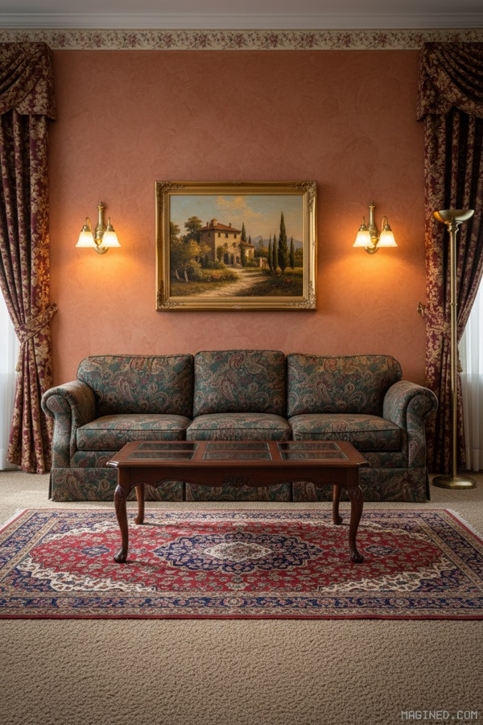
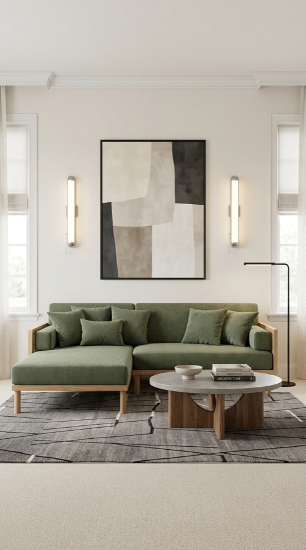

01 · The idea
Redecorating a room is a visual problem, but shopping for it is a text problem — endless product listings with no way to see how anything fits your space. magined closes that gap: generate a redesigned version of your room with AI, then shop the actual products that appear in it.
It's also a deliberate proof of a bigger thesis: that one designer, working fluently with AI tooling, can now carry a product from idea to revenue.

02 · What I built
- The room designer — an image-generation pipeline built on Nano Banana, wrapped in an interface designed in Figma and refined in code.
- A shoppable gallery — generated rooms link to real, purchasable products, monetized through affiliate partnerships.
- An agent backbone — content, product matching, and operational tasks run on the Claude Agent SDK with MCP integrations, so the site improves while I sleep.
- Growth engineering — classic SEO plus LLM SEO, structuring the site so both search engines and AI assistants can find and recommend it.
Every screen was designed twice: once in Figma to find the idea, once in code to make it true.

03 · Why it matters for your team
magined is my day-to-day lab for the way product work is heading: design and engineering collapsing into a single, fast loop. The judgment calls — what to build, what to cut, what quality bar to hold — are the same ones I'd bring to your product, with the AI leverage already wired in.